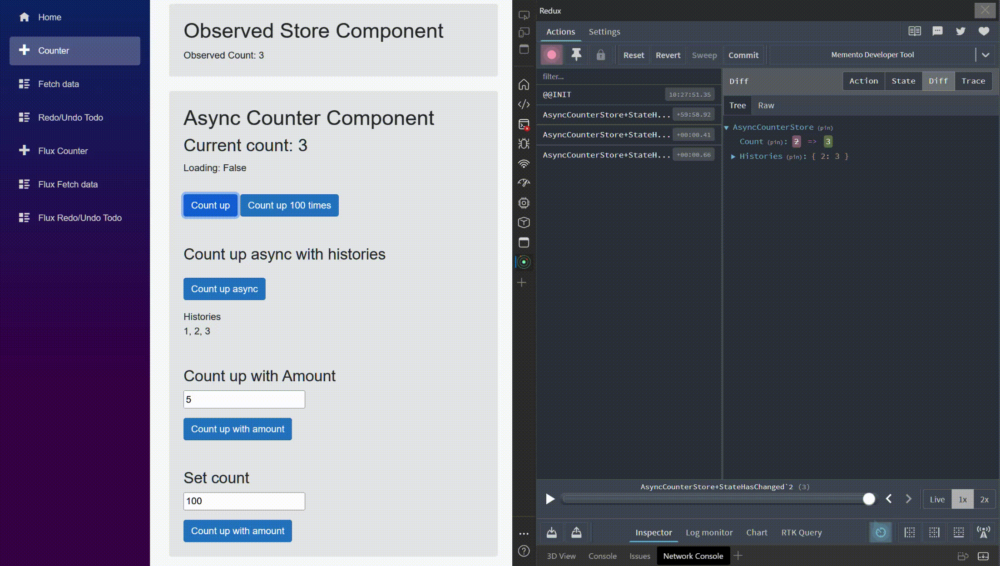

Redux Dev Tools
Redux DevTools is supported. Redux DevTools is a tool for debugging application's state changes. State can be time traveled and history can be viewed in DevTools.
Currently, memento is supported most features of ReduxDevTools.

There are two types of Middleware for ReduxDevTools.
One is Memento.ReduxDevTool.Browser that interacts via Javascript The other is Memento.ReduxDevTool.Remote which interacts via WebSocket.
Memento.ReduxDevTool.Browser
Works with Blazor Server and Blazor Wasm.
Interact with ReduxDevTools via JavaScript interop on Microsoft.JSInterop.
Memento.ReduxDevTool.Remote
Connect and Interact with applications via WebSocket. You can use ReduxDevTool even in environments that do not use a direct browser, such as Blazor Hybrid, Native Application, and Blazor Server. Not available for Browser applications such as Blazor WASM as it must support System.Net
Usage
To enable develop integration, follow these steps
1. Install Redux DevTool Extension into Your Browser
It can be used as a browser extension for Edge, Chrome and FireFox.
Chrome
https://chrome.google.com/webstore/detail/redux-devtools/lmhkpmbekcpmknklioeibfkpmmfibljd
Edge
https://microsoftedge.microsoft.com/addons/detail/redux-devtools/nnkgneoiohoecpdiaponcejilbhhikei
FireFox
https://addons.mozilla.org/en-US/firefox/addon/reduxdevtools/
You can see the all docs for extension on official Github repos.
https://github.com/reduxjs/redux-devtools
2. Install the memento middleware from Nuget package
CLI
Case of Blazor WASM or Blazor Server
dotnet add package Memento.ReduxDevTool.Browser
Case of Native app, Blazor MAUI or Blazor Server
dotnet add package Memento.ReduxDevTool.Remote
Nuget
Memento.ReduxDevTool.Browser https://www.nuget.org/packages/Memento.ReduxDevTool.Browser
Memento.ReduxDevTool.Remote https://www.nuget.org/packages/Memento.ReduxDevTool.Remote
3. Register services
This might be a security flaw, so you should only reference this package in Debug builds.
Case of Memento.ReduxDevTool.Browser
using Memento.ReduxDevTool.Browser;
#if DEBUG
builder.Services.AddBrowserReduxDevToolMiddleware(new() {
StackTraceEnabled = true,
OpenDevTool = true,
...
});
#endif
Case of Memento.ReduxDevTool.Browser;
using Memento.ReduxDevTool.Remote;
#if DEBUG
builder.Services.AddRemoteReduxDevToolMiddleware(
false,
new() {
StackTraceEnabled = true,
OpenDevTool = true,
...
}
);
#endif
Boot Redux DevTools
Press F12 to open the developer tool and select the Redux tab.
All Store states in an application are represented as a single StateTree.
Redux Dev Tools middleware API Reference
API Reference for ReduxDevTools middleware.
AddBrowserReduxDevToolMiddleware Extension
Register the middleware to services for browser.
Parameters:
| Parameter | Type | Default Value | Description |
|---|---|---|---|
services |
this IServiceCollection | - | The services. |
option |
ReduxDevToolOption? | null | The middleware options. |
isScoped |
bool | false | If true, registers with AddScoped, otherwise AddSingleton. |
Returns:
The service collection.
AddRemoteReduxDevToolMiddleware Extension
Register the middleware to services for via remote connection.
Parameters:
| Parameter | Type | Default Value | Description |
|---|---|---|---|
services |
this IServiceCollection | - | The services. |
isScoped |
bool | false | If true, registers with AddScoped, otherwise AddSingleton. |
chromiumDevToolOption |
ReduxDevToolOption? | null | The middleware options. |
hostName |
string | "0.0.0.0" | The proxy server hostname. |
port |
ushort | 8000 | The proxy server port. |
secure |
bool | false | Uses HTTPS if true, otherwise HTTP. |
Returns:
The service collection.
ReduxDevToolOption
| Property | Type | Default Value | Description |
|---|---|---|---|
Name |
string | "Memento Developer Tool" | The name displayed in the developer tool. |
MaximumHistoryLength |
uint | 50 | The maximum number of history entries stored by the developer tool. |
Latency |
TimeSpan | TimeSpan.FromMilliseconds(800) | The latency for the developer tool. |
StackTraceEnabled |
bool | true | Indicates whether stack traces are enabled in the developer tool. |
StackTraceLinesLimit |
int | 30 | The limit of stack trace lines displayed in the developer tool. |
OpenDevTool |
bool | false | Indicates whether the developer tool should be opened by default. |